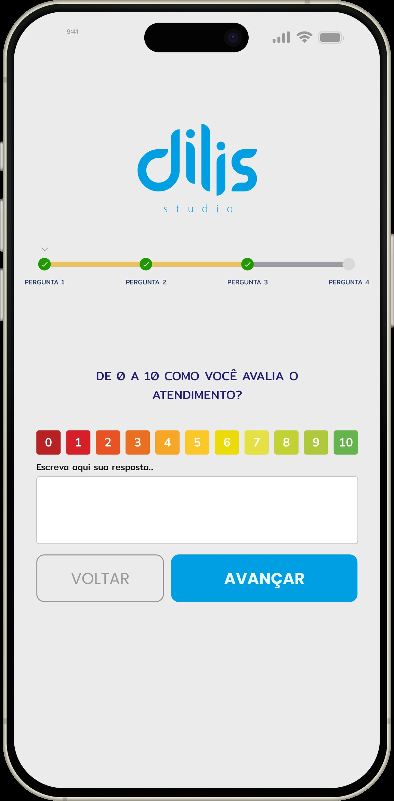
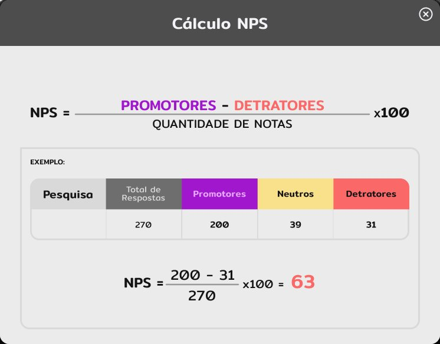
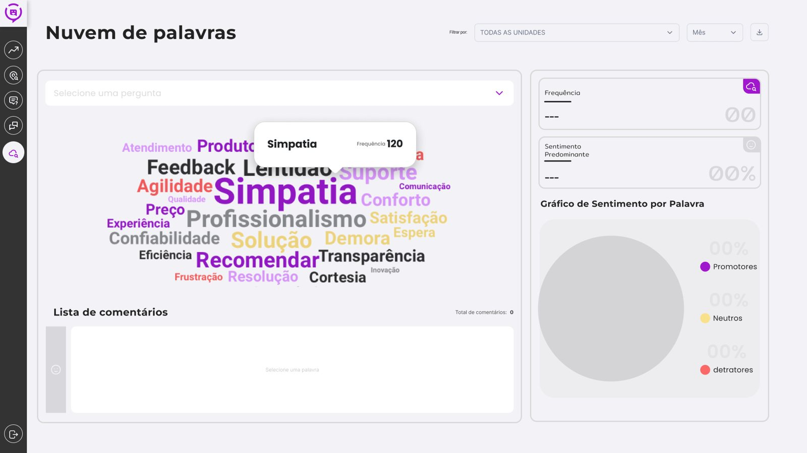
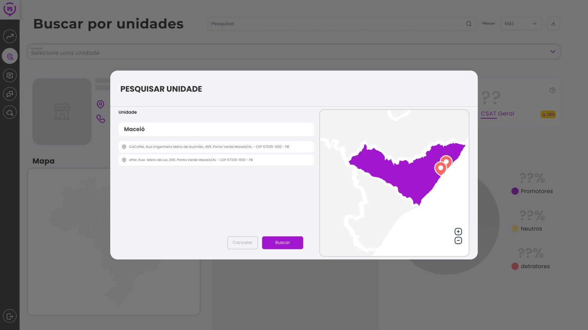
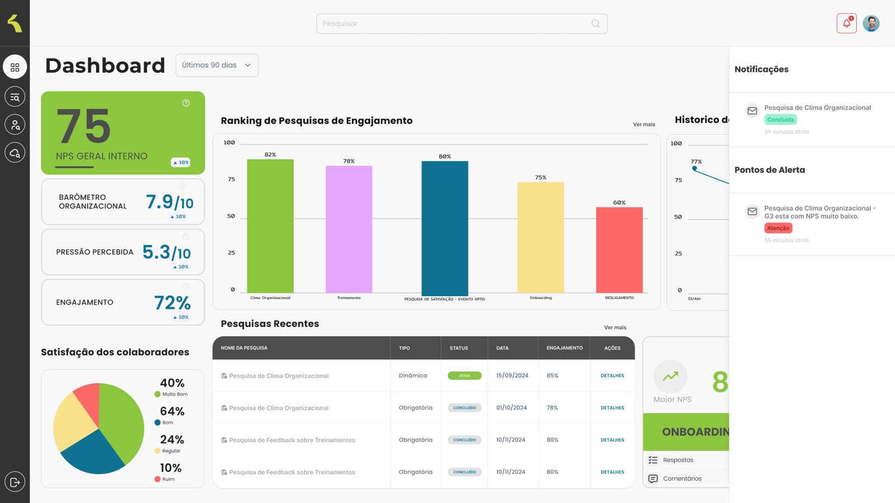
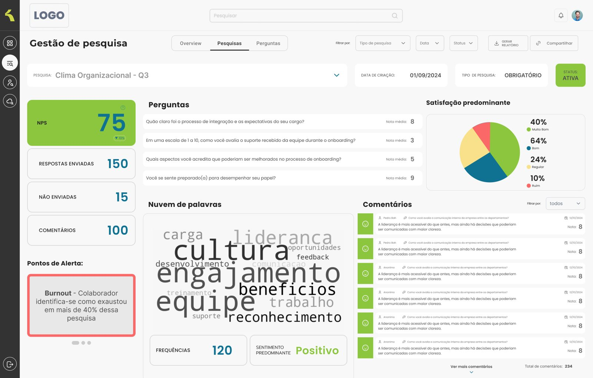
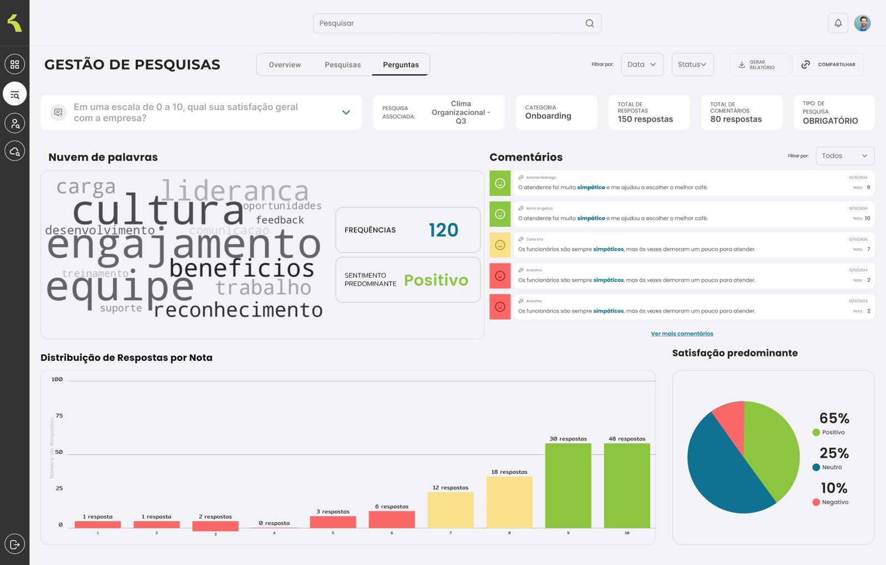
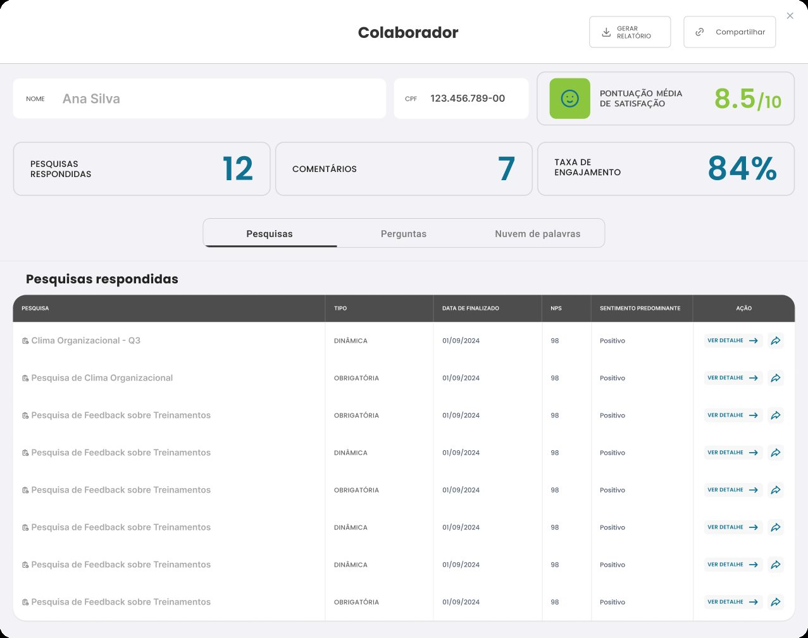
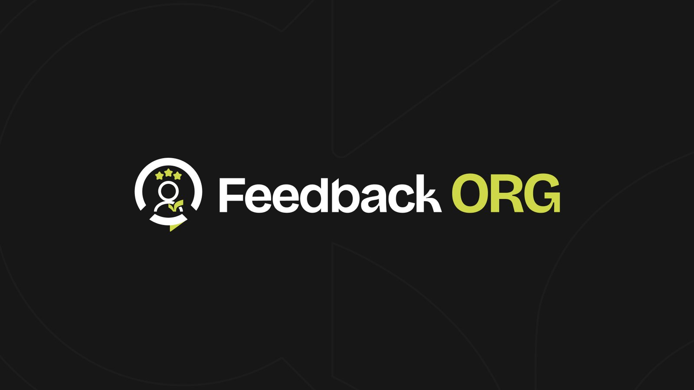
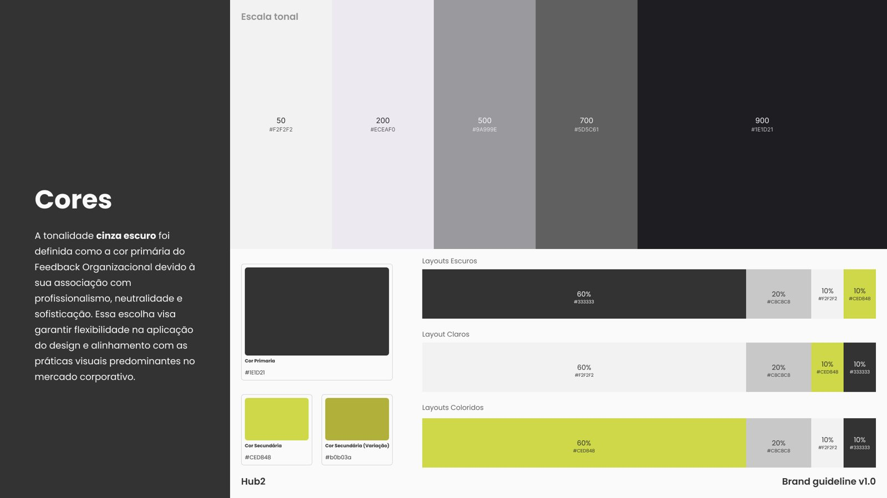

O produto
A Dilis atende empresas de vários setores e a liderança percebeu que muitos clientes tinham dados sobre os funcionários, mas não conseguiam ler esses dados nem agir a partir deles. Fiquei com o planejamento e o design dos dashboards. A ideia era mostrar a donos e gestores de RH, sem precisar de um analista no meio, como estão a organização e as pessoas.
O produto saiu em duas etapas. Primeiro o Feedback XP, um MVP para avaliar atendimento em lojas. Depois o Feedback ORG, que usa a mesma base para olhar para dentro da empresa.
Feedback XP, o MVP
O Feedback XP mede o atendimento de várias lojas ou unidades. O cliente responde uma pesquisa curta e com cara de jogo, que também desenhei com a Dilis, e o gestor vê NPS e CSAT por unidade, por pergunta e por comentário.




Com o MVP pronto, a pergunta seguinte foi se a mesma lógica servia para medir o clima interno.
Feedback ORG
O Feedback ORG trata de clima, engajamento, onboarding, desligamento e riscos psicossociais, que a NR-01 passou a exigir. O objetivo é o RH perceber o problema antes de a pessoa pedir demissão.
O problema de design
Era muito dado, e o gestor de RH precisava entender a situação olhando a tela uma vez.
Algumas decisões que saíram disso. O NPS interno fica em destaque e o resto aparece quando a pessoa entra na pesquisa. A navegação desce sempre na mesma ordem, de empresa para unidade, pesquisa, pergunta e colaborador, com o filtro fixo no topo. Os comentários abertos também viram dado, em nuvem de palavras e sentimento, e os casos que pedem atenção (como sinais de burnout) aparecem como alerta. A IA sugere o que olhar e que plano tomar, mas quem decide é o gestor.
Interface




Marca
Desenhei também o logo e o guia de marca do Feedback ORG.


Onde está hoje
O Feedback ORG está sendo vendido e ainda busca os primeiros clientes. Não há dados de uso, então este case mostra o design e as decisões, sem resultado medido.
Começar pelo MVP no atendimento ajudou. A lógica de pesquisa curta com um indicador claro já estava testada quando chegou ao RH. O que eu faria diferente: o projeto começou quando IA e análise de dados ainda estavam no início. Hoje eu usaria modelos melhores para ler os comentários e sugerir os planos de ação.